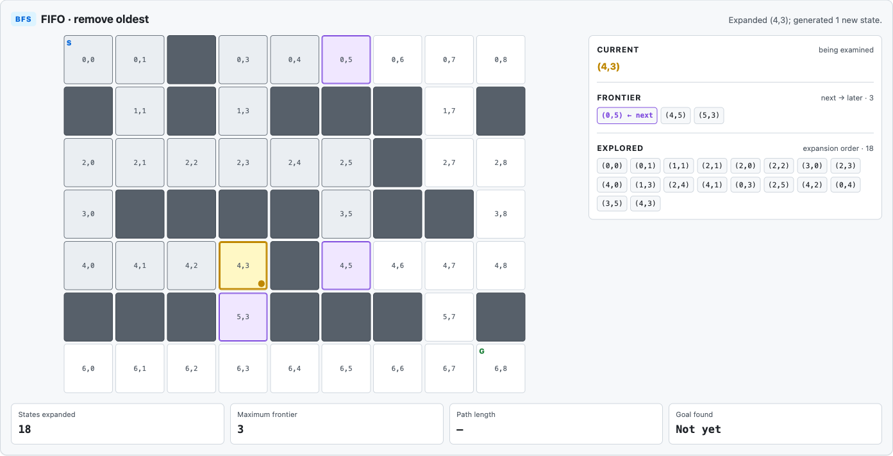
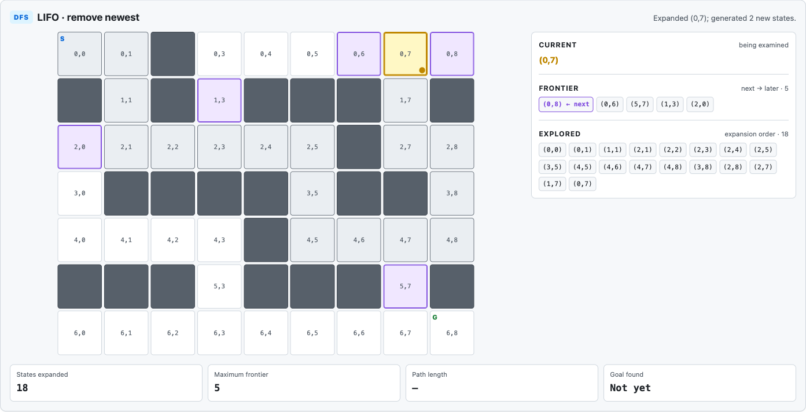
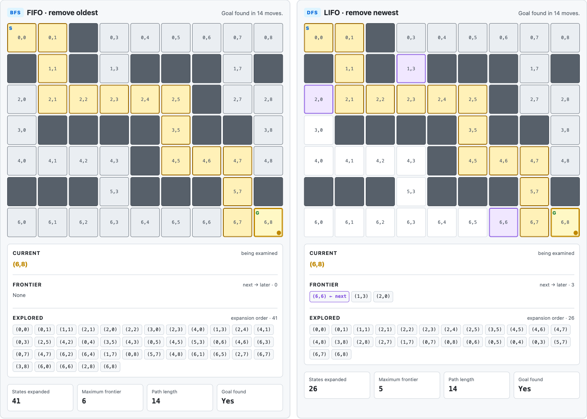

The frontier — where possibilities wait
Return to the Week 2 program. At (2,3), neighbours(state) hands back three legal possibilities and a human picks one on instinct. An algorithm cannot say:
“Right feels promising.”
Nothing in the representation contains that judgement. So instead of committing to one move and forgetting the others, the algorithm keeps everything it has discovered and decides systematically which to examine next.
That collection is the frontier.
The frontier contains states that have been discovered but are still waiting to be expanded.
Why that word
Picture yourself in an unlit maze. You are standing at a junction with three corridors leading off it. You can only walk down one, but the other two do not stop existing — you simply have not been down them. So you note them: two corridors back there, unvisited. When the corridor you chose runs out, you consult that note and pick another.
The note is the frontier, and the name describes its shape. It is the edge of the map you have drawn so far:
- behind it — states you have already expanded, where you have been and looked around
- the frontier itself — states you know exist but have not visited, the doors you have seen and not opened
- beyond it — states you have not yet heard of
As the search runs, that edge is pushed outwards — and the shape it takes is the whole of this week. Push it evenly in every direction and the frontier spreads like a wave, a broad band of open doors at an even distance from the start. Push it along one branch at a time and the same frontier stretches out as a thread, a thin line reaching deep with almost nothing held to either side.
Same collection, same definition. Only the rule for choosing which door to open next is different, and that rule is what the rest of this page is about.
The reason a machine needs one at all is that Week 2's program did not have one. It offered a human three moves, took the answer and forgot the alternatives.
An algorithm has no instinct to choose with, so it cannot afford to forget: it keeps every state it has discovered but not examined, precisely so that it can come back. Without a frontier there is nothing to come back to.
Generated is not the same as expanded
This distinction is small, and everything else this week rests on it.
- GENERATED — the machine knows the state exists. It appeared as a legal successor of something already examined.
- EXPANDED — the machine has selected that state and called
neighbours(state)on it, so its own successors are now known too.
A large search may know about thousands of possibilities while actively examining exactly one.
Both ideas are easier to hold if the maze itself is in front of you. The next diagram is not an abstraction — it sorts six real cells of this grid, so here they are in place first, coloured the way that diagram colours its three columns.
(0,0), (0,1) and (1,1), already expanded. Amber: (2,1), the one being expanded right now. Purple: (2,0) and (2,2), the two waiting on the frontier. Every other open cell has not been discovered yet. Diagram created for these pages; no external image licence is used.Now the same six states again, lifted off the map and sorted by what the search has done with them rather than by where they sit:
To expand a state is to select it, ask the problem for its legal successors, and put the new ones on the frontier. Week 2 already built that middle step:
def neighbours(state):
row, col = state
result = []
for action, (d_row, d_col) in MOVES.items():
candidate = (row + d_row, col + d_col)
if is_legal(candidate):
result.append((action, candidate))
return resultRun it on the state in the middle column of Figure 2. neighbours((2,1)) tries all four moves in turn:
UP -> (1,1) is_legal ✓
DOWN -> (3,1) wall ✗
LEFT -> (2,0) is_legal ✓
RIGHT -> (2,2) is_legal ✓Three survive, and yet only two of them arrive on the frontier in Figure 2. The missing one is (1,1), which is sitting in the expanded column already — the search has been there and has no reason to queue it a second time. That second check is not part of neighbours() at all; it belongs to a reached set the search keeps alongside the frontier, which is the next beat but one.
Notice what these lines do not do. They never rank the three survivors, never mention the goal, and never say which of (2,0) and (2,2) should be examined first. They answer only what follows from the state already chosen.
The problem we are searching
This week we add a frontier policy on top of it and nothing else, and that is exactly what makes the comparison later on worth anything — every difference we see has only one possible cause.
When the search expands (2,3) it calls the same neighbours((2,3)) written in Week 2, and three legal states join the frontier. Which one is removed later is the only thing we add.
The state belongs to the problem; the bookkeeping does not
A maze state is still (row, column) and nothing else. But the search process needs to remember three things the problem never cared about:
- which states have already been reached
- where a state currently sits in the frontier
- which state it was generated from — its parent
None of that is part of the maze. Reaching (6,8) says where the search finished, not how it got there, so parent is what recovers the route. We build it in Highlight 4, beside the code that uses it.
Reached states and repeated work
A maze contains cycles. If the agent can move from A to B it can usually move straight back, and a search with no memory will rediscover A → B → A → B forever.
So the search keeps a second collection alongside the frontier:
reached = {START}and consults it before adding anything new:
if next_state not in reached:
reached.add(next_state)
...The two collections differ. Everything on the frontier has been reached; not everything reached is still on the frontier, because some of it has been expanded already.
Tree search treats every newly generated path as a new branch, even when two branches arrive at the same state. Graph search notices the state has already been reached.
Because our maze is a graph, reached-state checking stops the search processing the same state over and over. It is not an optimisation added for cleverness.
What makes a search blind
Search strategies divide into two families. An uninformed — or blind — strategy has no problem-specific information saying that one non-goal state looks more promising than another.
Blind is not ignorant. The search still knows START, GOAL, WALLS, MOVES, neighbours(state) and is_goal(state). What it lacks is guidance: nothing tells it that one waiting state is closer to the goal than another.
So the frontier has to be organised by a rule that makes no estimate of progress at all. Two very simple rules produce very different behaviour.
Why this matters this week
Week 2 gave us a state space. The frontier turns that static structure into a process: at any moment there are states already expanded, one being examined, and a set still waiting. That makes the central Week 3 decision precise:
Which waiting state should be expanded next?
Breadth-first search gives us one answer.
Breadth-first search — everything nearby first
Breadth-first search makes one commitment, and it is about behaviour, not data structures:
Do not explore a deeper state while a shallower one is still waiting.
Take a small tree and watch what that produces.
The letters do not matter. The shape does: wide first, deep later.
Watch the frontier, not the final order
That order is a symptom. The cause is what happens to the frontier.
start [S]
expand S [A, B, C]
expand A [B, C, D, E]Notice what did not happen. D and E are children of the state just expanded, and they do not jump ahead of B and C. The older, shallower possibilities keep their turn — which is exactly what a FIFO queue does.
FIFO is the mechanism, not the definition
FIFO means First In, First Out: whatever has waited longest leaves first.
BFS does not go level by level because somebody drew the tree that way.
It goes level by level because the frontier behaves as a FIFO queue. The data structure explains the visible behaviour, not the other way round.
In Python that is one import and two method calls:
from collections import deque
frontier = deque([START])
state = frontier.popleft() # remove the oldest waiting state
frontier.append(next_state) # add newly generated states at the backThe maze under BFS
START, GOAL and neighbours(state) are still the Week 2 definitions. Only the frontier is new, and the visible result is a wave.

BFS discovers everything one move from the start, then everything two moves away, and so on, so the explored region spreads outwards evenly. It has no idea where the goal is. It is refusing to skip a shallower possibility in favour of a deeper one.
The guarantee, and the condition attached to it
Suppose every move costs one step. If BFS first reaches a goal at depth 5, there cannot be an undiscovered goal at depth 3 — every reachable state at depths 0 to 4 was dealt with first. So, with equal action costs:
BFS finds a solution of minimum depth: the fewest moves.
The condition is not decoration. If one route takes two actions costing 10 each and another takes three costing 1 each, BFS prefers the two-action route because it is shallower, never noticing that 20 is worse than 3. The precise claim is minimum depth when action costs are equal, not the cheapest route.
The weighted graph in the formal notes is exactly this case. Standard BFS orders states by depth, not by accumulated edge weight, so a least-cost path with unequal costs needs a cost-aware strategy.
Completeness follows from the same behaviour. BFS cannot disappear down one branch, because every shallow frontier state eventually gets its turn. On the finite kind of maze we use here, if a reachable solution exists, BFS will find one.
What breadth-first search pays for it
Memory. Suppose each expansion produced roughly three genuinely new states:
depth 0 1
depth 1 3
depth 2 9
depth 3 27
depth 4 81
depth 5 243BFS may hold most of one level in the frontier while it finishes the previous one, so the frontier can become enormous even when the solution path is short. The trade-off, then:
- Benefit — with equal step costs, the first goal found is at minimum depth.
- Cost — a wide frontier, and therefore a potentially large memory requirement.
Why this matters this week
BFS gives the machine a mechanical answer to “what next?”:
expand the shallowest waiting possibility
A FIFO queue is how that answer gets enforced. Depth-first search makes almost the opposite bargain.
Depth-first search — commit to one possibility
Depth-first search commits the other way:
Once you start down a branch, keep going until you cannot continue, then come back.
Behaviour first, then the mechanism
Suppose the frontier holds A, B, C and an expansion has just generated E and F. DFS wants those new, deeper possibilities considered before it returns to the older alternatives.
That is LIFO — Last In, First Out: the most recently added possibility is the next one removed. A stack provides it for nothing, and in Python an ordinary list is enough:
frontier = [START]
state = frontier.pop() # remove the newest waiting state
frontier.append(next_state) # add at the same endFigure 4 numbered this tree by the order a FIFO frontier expands it. Swap in the LIFO rule and change nothing else:
H before it has looked at B at all. Diagram created for these pages; no external image licence is used.Set the two numberings side by side. BFS clears A, B and C before touching any grandchild; DFS reaches a leaf and only then unwinds to the alternatives left waiting. The tree never changed — only which end of the frontier was read.
Backtracking is not a separate intelligence
DFS often looks as though it is reasoning:
“That route failed. I should go back.”
There is no such step. In the bottom row of Figure 7, nothing new is pushed at the dead end, so the next pop() exposes an alternative that has been sitting on the stack since earlier. Backtracking is what a stack does when nothing arrives — not a judgement that the branch was a mistake.
The same tree, the other rule

Both panels use the same tree, goal test and successor order. Only the removal rule differs, and the two traversals are barely recognisable as the same search.
Note which branch DFS opened first. Successors were generated A, B, C, so C was pushed last — and a stack removes the newest. That matters more than it looks, and we return to it below.
The maze under DFS

Set Figure 10 beside Figure 6. Instead of a region spreading outwards there is a narrow trail, and the frontier holds a few alternatives from earlier turnings, waiting to be backtracked into.
Deep does not mean promising
DFS can walk straight past the answer. Suppose the goal is one move from the start, on a branch DFS does not happen to open first:
If DFS commits to A first, it may explore A → B → C → D → E before returning to a goal that was one step from the start. Nothing has gone wrong: DFS is doing exactly what its frontier rule says.
deep does not mean promising
Nothing tells the algorithm that deeper is better. It prefers recency, and recency is not evidence.
Memory, cycles and termination
Three consequences follow from the same rule, and each needs its condition attached.
- Frontier memory. DFS usually keeps a far narrower frontier than BFS, following one branch and retaining only the alternatives needed for backtracking. Our graph-search version also stores
reachedandparent, so it is not literally holding one path — the advantage is about the frontier. - Cycles. Unrestricted, DFS can follow
A → B → C → Aindefinitely. That is exactly what thereachedset from Highlight 1 prevents. - Completeness. Unrestricted DFS can disappear down an infinite branch or around a cycle, so in general it is not complete. On our finite maze with reached-state checking it cannot generate endlessly many new states, so it terminates and will encounter a reachable goal. Both statements are true; they describe different cases.
DFS also has no minimum-depth guarantee: the first goal it finds is the first goal along whatever branch ordering the stack produced.
Successor order breaks the ties
BFS and DFS decide the broad strategy. They do not decide everything.
MOVES = {
"UP": (-1, 0),
"DOWN": (+1, 0),
"LEFT": (0, -1),
"RIGHT": (0, +1),
}neighbours(state) returns successors in that order, and a stack removes whichever was appended last. So the last legal successor generated is the first one DFS explores. Change the order in MOVES and DFS may follow an entirely different corridor — same maze, same start, same goal, same LIFO rule.
This is not a flaw. It is a reminder that a strategy can leave ties unresolved, and the implementation still has to break them somehow. BFS is affected too, but its level-by-level character survives; DFS can look like a different algorithm. We test exactly this in the Search Lab.
Why this matters this week
DFS gives the machine the other mechanical answer:
expand the newest, deepest waiting possibility
A LIFO stack creates that behaviour. The benefit is a small frontier and the chance of reaching a deep solution quickly. The cost is that the branch may be terrible, the first solution need not be good, and unrestricted DFS needs care around repeated states and infinite depth.
Neither strategy is the intelligent one. They are two rules for organising ignorance, and the useful comparison only appears when they run on the same problem.
One loop, two policies
Everything below runs on the Week 2 problem, untouched:
same ROWS, COLS
same START = (0,0)
same GOAL = (6,8)
same WALLS
same MOVES
same neighbours(state)
same is_goal(state)The problem has not changed. One line has.
BFS and DFS share almost the entire search:
frontier = ...
reached = {START}
parent = {START: None}
while frontier:
state = remove_next(frontier)
if is_goal(state):
break
for action, next_state in neighbours(state):
if next_state not in reached:
reached.add(next_state)
parent[next_state] = state
add(frontier, next_state)The start, goal test, neighbours(), reached-state rule and parent bookkeeping are identical for both. The entire week is concentrated in the one line that differs:
if mode == "BFS":
state = frontier.popleft() # the oldest waiting state
else:
state = frontier.pop() # the newest waiting stateThat is the executable version of the whole argument. Everything else in this section follows from popleft() versus pop().
This is why the Week 2 separation between problem definition and controller was worth insisting on: we replace the controller without touching the maze.
Run the race yourself
The lab is a browser version of the exact Week 2 maze — same grid, start, goal, walls, move vectors, goal test and successor order — with BFS and DFS supplying two frontier policies. The frontier is always listed in removal order, next first, even though the two strategies remove from opposite ends. Run, Pause, Reset and the speed control change only how the process is watched, never the result.
Four runs, in order:
- BFS. Press Step repeatedly. Watch three things rather than the outcome: the amber current state, the purple frontier, and the grey explored region.
- DFS. Press Reset, switch strategy, and step the same number of times. Ask: what changed, given that the maze did not?
- Race. Each tick expands at most one state on each side. Compare states expanded, maximum frontier, path length and whether the goal was found.
- Successor order. Keep DFS selected, change the
neighbours()order, and run again. Ask: did the algorithm change?
The answer to the last one is no. The frontier policy is still LIFO. What changed is which successor was generated last, and therefore which one the stack hands over first — and that alone redraws the whole traversal.
The default race, and what it does not prove

| States expanded | Maximum frontier | Path length | |
|---|---|---|---|
| BFS | 41 | 6 | 14 |
| DFS | 26 | 5 | 14 |
DFS did less work here and returned a path of the same length. So:
Does DFS finding the same 14-move path prove that DFS is optimal?
No. It shows that this DFS run, on this maze, under this successor order, happened to return a 14-move path. BFS's 14 moves are guaranteed by the algorithm. DFS's 14 moves are a property of the instance, and nothing protects them if the maze or the successor order changes.
An observed result and an algorithmic guarantee are different kinds of claim. The two optional open-grid presets make that testable: one hands DFS a lucky first branch, the other puts a shallow goal where the same ordering reaches it late.
Do not use wall-clock time as the headline measure on a maze this small.
A few milliseconds mostly measure the browser, the machine and the animation. Count the search work directly instead.
Search cost is not solution cost
The Race panel shows both at once, which is why they separate most easily here.
- Search cost — how much work was needed to find a solution:
states expandedandmaximum frontier size. - Solution cost — how expensive the returned solution is. On this equal-cost maze, the number of moves in the path.
They move independently: BFS did more search work for a guaranteed-minimum path, DFS less work for an equally short path with no guarantee behind it. An algorithm can have a high search cost and a low solution cost, or the reverse.
Comparing the two strategies
Strategies are compared on four concerns:
- Time — search work. Measured here as
states expanded. - Space — memory. Measured here as
maximum frontier size. - Completeness. Under the stated conditions, will a solution be found if one exists?
- Optimality. Does the returned solution minimise the cost we care about?
The important words are under the stated conditions. The assumptions travel with the claims.
Breadth-first search
- systematic shallow exploration
- complete for our finite, reachable setting
- a minimum-depth solution when action costs are equal
- a potentially wide frontier
Depth-first search
- systematic deep exploration
- often a much narrower frontier
- strongly dependent on successor order
- no minimum-depth guarantee
- no general completeness guarantee for unrestricted infinite-depth tree search; terminates on a finite graph with proper reached-state checking
The conclusion is not that one wins. The choice is a trade-off, and which side you want is a property of the problem, not of the algorithm:
- a shallow solution matters and memory is available → BFS is attractive
- memory is tight and any solution will do → DFS is attractive
- the first DFS branch happens to be a good one → DFS looks spectacular
But “happens to be good” is not knowledge available to a blind strategy.
Reconstruct the solution
Finding the goal tells us where the search finished, not the route. This is where the parent bookkeeping from Highlight 1 earns its place.
parent = {START: None}
# when next_state is first reached
parent[next_state] = stateEvery reached state records the state it was generated from. When the goal turns up, follow those links backwards:
def reconstruct_path(parent):
if GOAL not in parent:
return []
path = []
state = GOAL
while state is not None:
path.append(state)
state = parent[state]
return list(reversed(path))That returns START → ... → GOAL. Week 2 defined what a solution path is; Week 3 produces one — an actual sequence of states, rather than the message “goal found”.
The transferable idea is narrow, and worth keeping narrow: the same frontier machinery applies whenever a problem is represented as states connected by legal transitions.
Why this matters this week
Week 3 changes exactly one thing from Week 2:
who decides what gets attention next
In Week 2 a human chooses; in Week 3 a frontier policy does, and every consequence traces back to it.
FRONTIER— holds the discovered possibilities still waitingSTRATEGY— BFS removes the oldest; DFS removes the newestTRADE-OFF— that choice changes expansion order, memory use, and what kind of guarantee is available
Both strategies share one striking limitation. Neither ever asks which state looks closer to the goal. They do not know. They are blind.